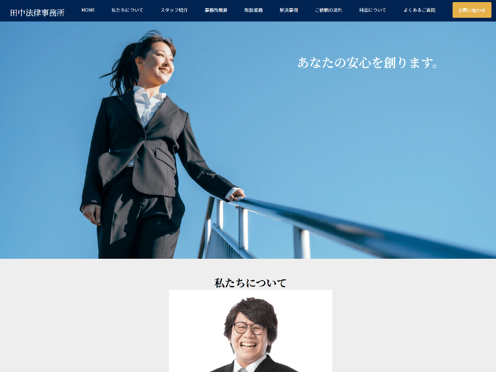
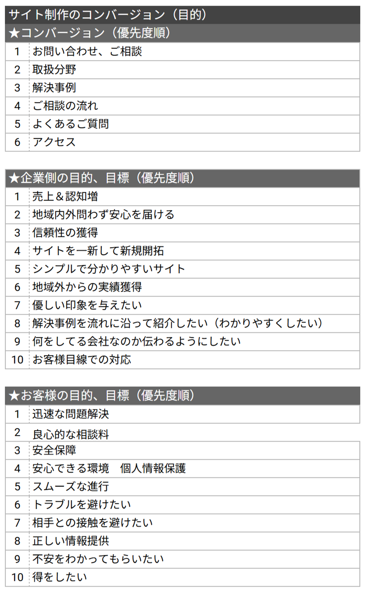
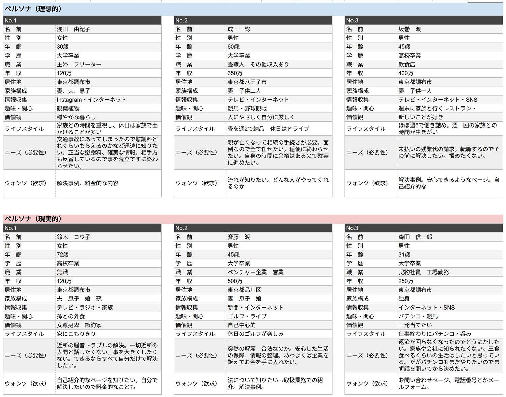

新規顧客の獲得と売上向上を目的としたコーポレートサイトを制作しました。 ターゲットは30代〜70代の個人ユーザーを想定しており、専門知識が少ない状態でも安心して利用できる設計を前提としています。 ペルソナ設定の段階で情報が足りないことへの不安と知らないことへの恐怖をユーザーは抱えていることが分かりました。そのため、「分かりやすい情報設計」と「安心する色と配置」を意識して制作を行いました。
URL
担当
競合サイト調査7Hペルソナ設計4Hサイトマップ作成6Hワイヤーフレーム制作8H
画像加工・選定5Hコーディング40H
サイトの目的

ターゲット

デザインについて
法律事務所の競合リサーチから、信頼感と安心感を与えることを重視し、全体を落ち着いた配色とシンプルな構成でデザインしました。メインカラーには青系を使用し、誠実さや安心感を視覚的に伝えました。また、セクションごとに背景色を切り替えることで、情報の区切りを明らかにし、ユーザーが直感的に内容を理解できるようにしました。 取扱業務や解決事例のセクションでは、アイコンを活用することで情報を視覚的に整理し、テキストだけに頼らず内容を把握できるよう工夫しています。さらに、お問い合わせなどの重要な導線については、目立つ位置に配置することで、迷わず行動できるよう設計しました。
コーディングについて
ワイヤーフレームの段階で情報設計やペルソナ、配色、サイトの目的を整理しておくことで、コーディング工程をスムーズに進めることができました。制作を通して、事前の設計が全体のクオリティや制作効率に大きく影響することを実感しました。また、設計を明らかにすることはコーディング担当者への配慮にもつながるため、ユーザーだけでなく、制作に関わるメンバー全体を意識することの重要性を学びました。